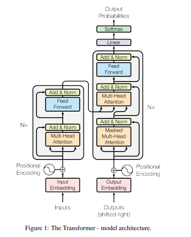

Contents
Architecture#
A Transformer is a deep learning architecture for sequence-based problems (like language translation, summarization, or text generation). It replaces older architectures — RNNs and CNNs — by using only attention mechanisms, removing the need for sequential processing.
Why this matters:#
RNNs process words one at a time → slow, poor long-range memory.
Transformers process all words at once, learning how much each word should attend to others → fast and global understanding.
So instead of reading a sentence left to right, it looks at the whole sentence simultaneously.
Overall Structure (Encoder–Decoder)#
Transformers have two main parts — the encoder and the decoder.
Component |
Purpose |
|---|---|
Encoder |
Reads the input sequence (e.g., English sentence) and converts it into vector representations ( |
Decoder |
Takes these vectors and generates the output sequence (e.g., French translation) one word at a time, using the previous word’s predictions as input. |
Both the encoder and decoder have 6 identical layers (in the original paper).

Inside the Encoder#
Each encoder layer has two sub-layers:
Multi-Head Self-Attention:
Every token (word) in the sentence looks at all other tokens to decide which are important for its meaning.
Example: In “The cat sat on the mat,” “cat” may focus more on “sat” than “mat.”
All three — Queries (Q), Keys (K), and Values (V) — come from the same source: the input sentence.
Feed-Forward Network (FFN):
A small two-layer neural network applied to each word’s embedding independently to add non-linearity and transform the representation.
Residual + LayerNorm:
Each sub-layer has a residual connection (
output = LayerNorm(x + Sublayer(x))) — this stabilizes training and helps gradients flow through very deep networks.
Inside the Decoder#
Each decoder layer has three sub-layers:
Masked Multi-Head Self-Attention:
The decoder cannot “peek” at future words (to maintain the sequence prediction property).
Masking ensures word i only attends to previous words (1…i-1).
Encoder–Decoder Attention:
Allows the decoder to attend to the encoder’s output (i.e., “look” at the input sentence).
Example: While generating the French word for “cat,” the decoder focuses on “cat” in English.
Feed-Forward Network (FFN):
Same as in the encoder; adds non-linearity.
Each sub-layer also has residual connections and normalization.
Core Mechanism — Attention#
Scaled Dot-Product Attention#
This is the mathematical engine behind everything.
Given:
Queries (Q)
Keys (K)
Values (V)
The formula: $\( \text{Attention}(Q,K,V) = \text{softmax}\left(\frac{QK^T}{\sqrt{d_k}}\right)V \)$
Intuitively:
Each query compares itself with all keys (similarity check).
The softmax converts these similarity scores into probabilities (attention weights).
The output is a weighted sum of the values (V).
This gives each token a context-aware representation of how much to “focus” on every other token.
The scaling factor \(\sqrt{d_k}\) prevents large dot products from causing vanishing gradients.
Multi-Head Attention#
Instead of doing one attention computation, Transformers use multiple in parallel.
Steps:
Split Q, K, V into h smaller “heads.”
Perform attention on each.
Concatenate all results.
Project back to full dimension.
This allows different heads to learn different relationships (syntax, semantics, position, etc.).
Example:
One head might focus on verb–subject relationships.
Another might focus on adjectives modifying nouns.
Input Representation (Positional Encoding)#
Transformers don’t use recurrence or convolution, so they can’t automatically track token order.
Two parts:#
Embeddings: Convert each word to a continuous vector (
d_model = 512).Positional Encoding: Add sinusoidal signals to embeddings to represent word position: $\( PE_{(pos, 2i)} = \sin\left(\frac{pos}{10000^{2i/d_{\text{model}}}}\right) \)\( \)\( PE_{(pos, 2i+1)} = \cos\left(\frac{pos}{10000^{2i/d_{\text{model}}}}\right) \)$ This allows the model to learn order and distance relationships between words.
Why Transformers Are Superior#
Feature |
Transformer |
RNN |
CNN |
|---|---|---|---|
Computation |
Fully parallel (O(1)) |
Sequential (O(n)) |
Limited local parallel |
Dependency length |
Constant (any word can connect to any other) |
Linear (depends on distance) |
Log/Linear |
Training speed |
Very high |
Slow |
Medium |
Interpretability |
Clear (attention weights) |
Opaque |
Moderate |
Real Performance#
English → German: BLEU = 28.4
English → French: BLEU = 41.8
Both outperformed previous RNN and CNN models by over 2 BLEU points, training in just 12 hours on 8 GPUs — showing that attention-based architectures are more efficient and scalable.
Intuitive Analogy#
Imagine translating a sentence:
“The book that you gave me is on the table.”
An RNN reads word-by-word and may forget earlier words.
A Transformer looks at the entire sentence simultaneously, and when generating each output word, it “attends” to the most relevant parts (like focusing on “book” when translating “livre”).
It’s like a smart spotlight scanning all words and focusing on the most relevant ones for each step.
Why It Matters#
Transformers are the foundation of modern AI language and vision models:
BERT, GPT, T5, BART, Whisper, ViT — all use this same attention-based core.
They scale efficiently, train fast, and capture global context better than any previous model.
In Summary
Concept |
Key Idea |
|---|---|
Attention |
Learn relevance between tokens. |
Multi-Head Attention |
Look at information from multiple perspectives. |
Positional Encoding |
Add order to token embeddings. |
Encoder–Decoder |
Encode input → generate output. |
Residual Connections |
Stabilize deep training. |
Result |
Fast, interpretable, and globally contextual sequence modeling. |
In essence:
The Transformer learns how every word relates to every other word — globally and in parallel — enabling unprecedented speed, scalability, and performance in modern deep learning.